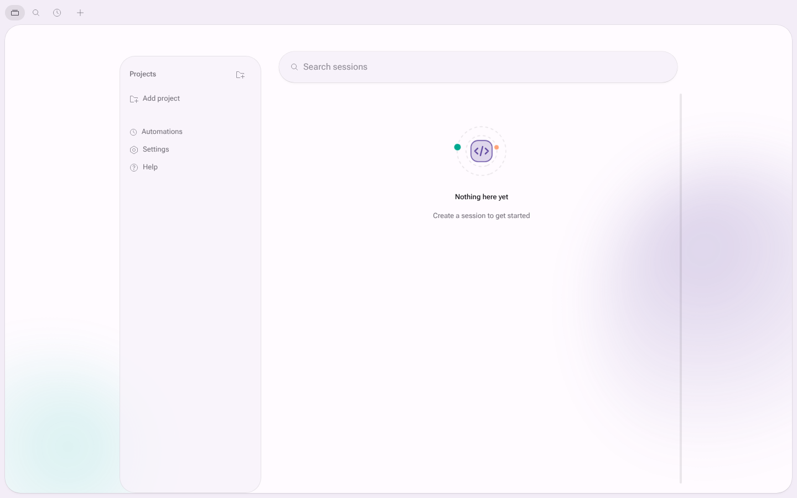

Your coding agent, beautifully in control.
Material OpenCode is the open source OpenCode agent with a Material Expressive app, every setting in a visual editor, and self-hosting that takes one command.
What's new
Everything below is in the app today. Each card links to its guide.
Material Expressive design
Tonal surfaces, Roboto Flex, large rounded shapes and spring motion, with a Classic option and a full reduced-motion path.
Configuration studio
Every key of opencode.json with the control that fits it, a diff to review before saving, and validation by the server.
Full bypass permissions mode
Let tools run without asking, behind a two-key confirmation. Deny rules and managed policies still apply.
Web app in Docker
An interactive setup writes everything for you, then one script starts the app on your network, locally or over SSH.
Appliance image
A minimal Linux image that boots straight into the app, for virtual machines, spare PCs and Raspberry Pi 4.
Deploy desktop app
Deploy to this computer with Docker, a Docker host over SSH, VirtualBox or VMware, and manage the instances you made. The source is bundled inside. It also writes the appliance to a USB drive or a Raspberry Pi SD card, and checks the drive afterwards.
Material chat
A Material composer and message bubbles, with prompt starters that fill an empty composer.
See every change before it lands
The Configuration studio asks the server for a dry run, shows the exact change to your configuration file with its comments kept, and only writes it when it passes validation.
Read the guide

A Home that feels like home
A Material search bar, a projects drawer and calm drifting backdrop graphics. Every animation stops when your system asks for reduced motion.
Download
Everything is published on the latest release page.
Docker image: ghcr.io/ding-ding-projects/material-opencode
What's in each release
- The Deploy desktop app as a portable Windows .exe and a Linux AppImage.
- Appliance disk images: x86_64 UEFI raw, VirtualBox VDI, arm64 and Raspberry Pi 4, with checksums.
- The web app Docker image, published to ghcr.io.